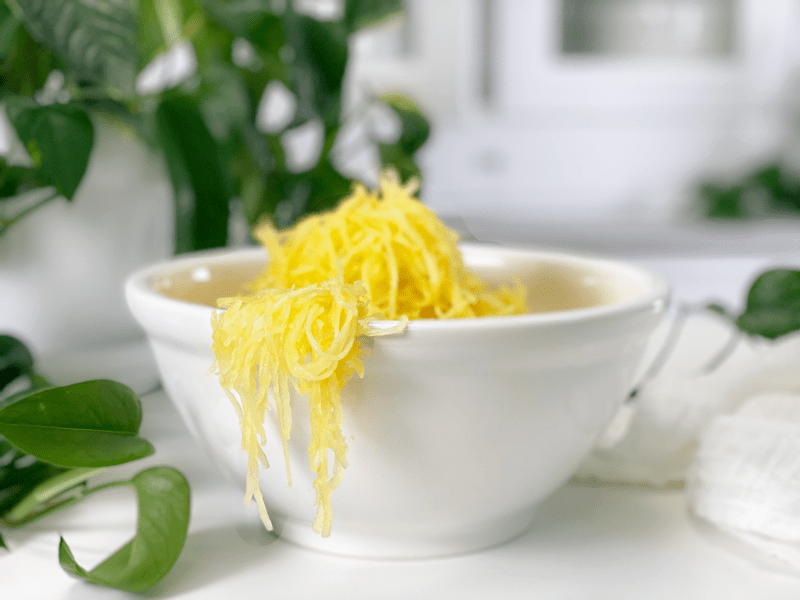
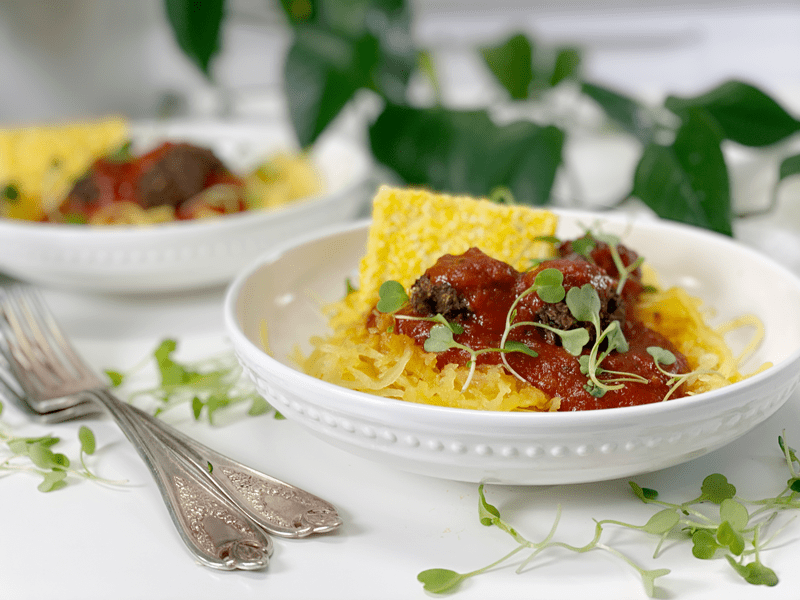
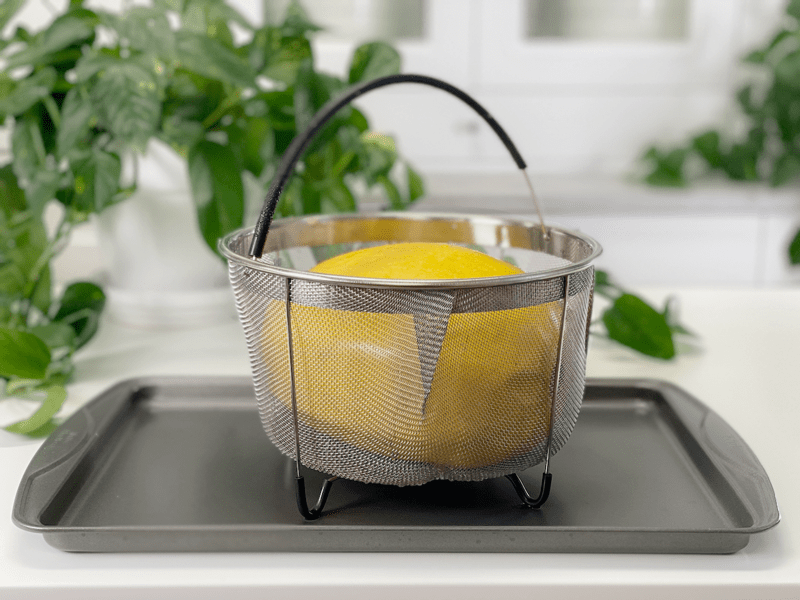
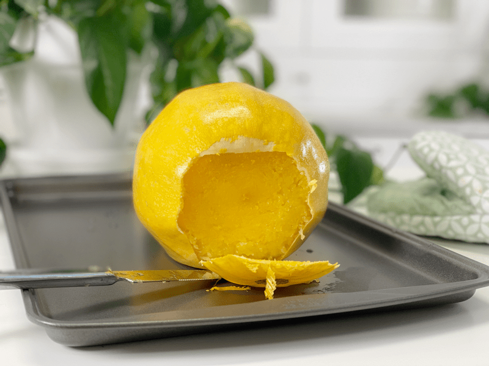
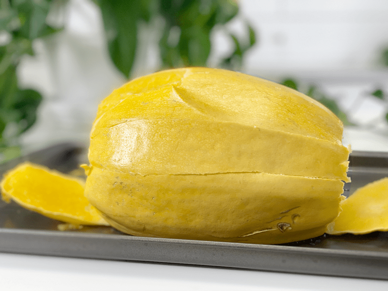
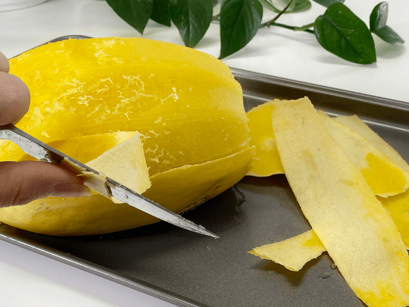
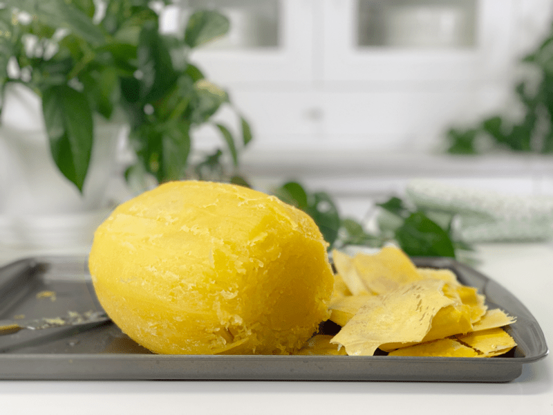
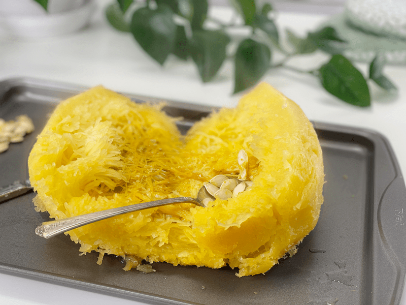
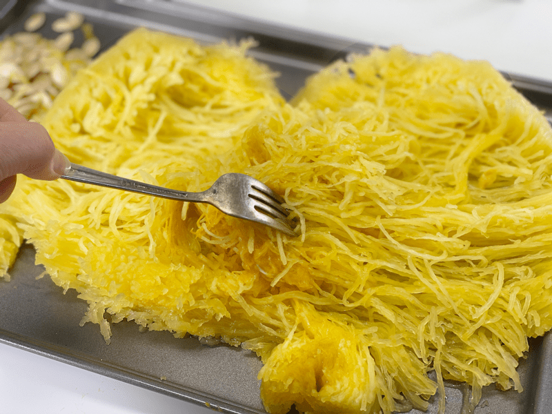
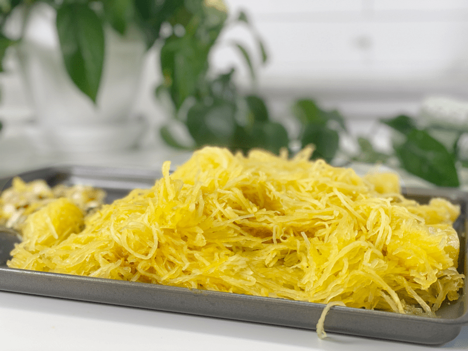

Spaghetti Squash | Instant Pot | Oven Baked |Oil-Free
In today’s post, I will discuss two cooking methods that don’t require you to cut raw squash. Because have you ever tried? Yikes! It’s challenging and dangerous. You can either bake it whole in the oven or whole in the Instant Pot–which, I have to tell you, is the most amazing cooked squash experience I have encountered.

What Does Spaghetti Squash Taste Like?
Are you new to trying this lovely vegetable? Spaghetti squash is relatively neutral in taste; its mild flavor is typically paired with a number of seasonings and sauces. BUT if you have a palate for simple tastes, it can be enjoyed with sea salt sprinkled on top. It’s more of a hydrating veggie rather than most starchy winter squashes, like, kabocha, butternut, or acorn. It’s low in calories, low fat, low carb, and rich in protein and antioxidants.

Tips & Tricks
- When purchasing a squash, it should be dry and firm, with no soft spots or cracks. It should be pale yellow and feel heavy for its size.
- Whole uncooked spaghetti squash should be stored in a cool, dry place in a single layer to allow air circulation. Don’t refrigerate uncooked and uncut squash, as it’ll spoil more quickly in the fridge. If it’s fresh and stored correctly, it should keep for up to 3 months.
- Always cut the squash lengthwise to get longer noodle strands.
- A telltale sign that spaghetti squash is cooked thoroughly is when the flesh inside shreds into noodles. But before you even cut the squash in half, test it by pushing a knife into the skin, down through the flesh. It should glide in and out with ease.
- If you are planning on eating a cooked squash later in the day or throughout the week, add sauce only when you are ready to eat it. Spaghetti squash will continue to release water as it sits, and it could dilute any sauces you add to it.
If you own an Instant Pot and haven’t tried cooking a squash this way, I highly encourage it! I hope you are having a blessed day. Please leave a comment below. amie sue

- 1 spaghetti squash (that fits inside your Instant Pot steamer basket)
- 1-2 cup Water
Instant Pot Method
- Place 1-2 cups of water inside the liner of the Instant Pot.
- 1 cup for 6-quart pot or 2 cups for 8-quart pot.
- Place the trivet or steamer baskets (whatever you have) inside the liner pot and set the spaghetti squash on top.
- Best not to have the squash sit directly on the base of the pot.
- No need to poke holes in it, cut it, or seed it. Keep it whole!
- Secure the lid and make sure the pressure valve is set to “Steaming.”
- Press “Manual” and adjust the cooking time to 30 minutes on high pressure.
- The size of your squash may require you to adjust the cooking time.
- I use an 8-quart Instant pot that has a fitted steamer basket, and my squash filled it end to end.
- When the machine is done cooking and beeps, you can quickly release the pressure or let it naturally release.
- Remove the squash from the unit (be careful, because it will be hot) and place it on a cutting board.
- I would recommend letting it cool for about 15 minutes before handling it, so you don’t burn yourself.
- Poke it with a knife to see if done all the way through. The blade should glide in and out.
- The skin should be loose-fitting around the squash. Take the tip of a sharp knife and make incisions into the surface about 2″ apart… from one end to the other. Do this around the whole squash.
- Now peel the skin right off and discard (compost if you do that).
- Cut in half lengthwise and remove the seeds with a large spoon.
- Use a fork to shred the squash strands, resembling noodles.
- Enjoy right away or store in the fridge for 3-5 days. You can also freeze in meal portion measurements for up to 3 months.
Oven-Baked Method
- Preheat the oven to 350 degrees (F). You will want to arrange the baking racks so you can slide the squash into the center of the oven.
- Place the squash in a shallow baking dish or on a baking pan that has a lip. We don’t want it to roll off.
- Poke a few holes in the top of the squash so steam can release while baking.
- Bake for 60-90 minutes, until you can pierce the skin and flesh easily with a paring knife.
- The timing will depend on the size of the squash you are baking.
- Cut off the end pieces, then cut it in half lengthwise and remove the seeds with a large spoon.
- Use a fork to shred the squash strands, resembling noodles. Discard the skin.
- Enjoy right away or store in the fridge for 3-5 days. You can also freeze in meal portion measurements for up to 3 months.
-

-
Place the squash into the steamer basket and set in the Instant liner pot
-

-
You should be able to poke a knife into the squash when fully cooked.
-

-
Make cuts in the skin with the point of a knife…
-

-
Then peel it off. So easy!
-

-
Want to play squash (football haha) Yeah, sad joke. It looks like a football to me. It’s amazing how easy it is to remove the skin… no waste!
-

-
Cut it in half and remove the seeds.
-

-
Shred with a fork to create the spaghetti strands.
-

-
Ready for consumption.
© AmieSue.com